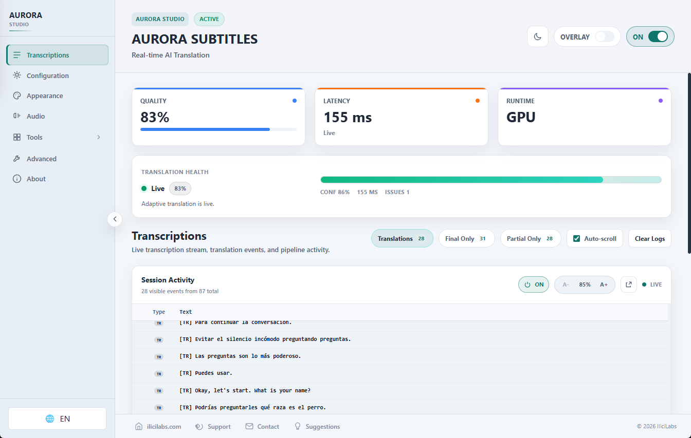

Oscar Iborra Maldonado.
Software Engineer | Applied AI
I deliver web applications and AI features, from implementation and bug fixes to tests and releases. I use Claude, Cursor, Gemini and ChatGPT to work efficiently, keep changes maintainable and verify that requirements are met.
Daily AI study and hands-on practice since March 2023. Adopted coding agents as they became available.
Explore the engineeringSoftware delivery. Applied AI in practice.
Features, maintenance and AI tooling, with a focus on efficient implementation, regression testing and reliable releases.
BlueCode
I develop and maintain software on an international Angular/Vue project. The AI toolkit I created helps the team locate code, implement changes and run quality checks efficiently.
Professional engineering · July 2024—present
Shared engineering tools for implementing, testing and maintaining an international Angular/Vue codebase: reusable agent workflows, cost-aware local RAG and application-control assistants.
Professional engineering
Initiated and championed GenAI adoption; developed the tooling, workflows, retrieval systems and quality controls standardised for use by other developers.
- 70 shared skills
- 10 custom MCP servers
- 3 project wikis
- 11 Angular apps + 1 Vue app
TypeScript · Python · Angular · Vue.js · LangGraph (LangChain) · MCP · RAG · SQLite FTS5 · sqlite-vec · Rust · PyTorch · Azure DevOps · Vitest · Playwright
Practical delivery and engineering efficiency
Built tooling around everyday development work: locating affected code, implementing changes, maintaining application behaviour, upgrading Angular and checking results. Shared skills and MCP tools standardise repeatable tasks for other developers.
Compact RAG context limits unnecessary token consumption; incremental refresh avoids re-indexing unchanged sources. Typed outputs, regression checks, checkpoints and bounded repair keep automation focused on verifiable changes and make failures recoverable.
Reusable agent infrastructure
Built 70 shared skills and 10 custom TypeScript MCP servers, supporting structured development across Claude Code, Codex, Cursor and Gemini. Hierarchical routing selects specialised guidance instead of placing every instruction in every prompt.
SDK/zod schemas define tool inputs and typed results. Tool metadata, scoped operations, write confirmations and PreToolUse checks constrain sensitive actions. CI validates the reusable toolkit.
Integrated project and delivery context from Azure DevOps, Freshdesk, local repositories and API tooling. The value is repeatable access to company knowledge and actions, with explicit contracts and operational boundaries.
Documentation RAG and codebase RAG
Created several documentation RAGs over three Azure DevOps wikis. Local QMD combines SQLite FTS5/BM25, sqlite-vec, embeddinggemma-300M, query expansion and Reciprocal Rank Fusion, with Qwen3-Reranker-0.6B through GGUF/node-llama-cpp.
Built codebase RAG across 11 Angular applications and one Vue application. Lexical-first retrieval with optional embeddings returns compact, relevant chunks to help agents understand change impact and locate the files to modify without consuming the whole codebase as context.
Chunks retain application, file, line, source commit and symbol provenance. Incremental indexing and commit validation refresh changed sources; original-source inspection remains part of the agent workflow.
Read code from the configured remote branch without switching or resetting a developer worktree. Local snapshots and text-search fallback support degraded operation. Retrieval runs locally and supplies compact context to the developer’s configured coding agent.
Large-scale agentic workflows
Built several large LangGraph (LangChain) workflows combining RAG context, specialist agents, typed outputs, model routing, checkpoints, corrective loops and quality gates.
An approximately 31-node workflow autonomously upgrades Angular versions across the project. SQLite checkpoints retain execution state; headless agents produce schema-validated outputs and run regression checks before passing human decision gates.
Bounded repair and model/effort escalation handle failure without an unrestricted retry loop. Review guidance can incorporate resolved pull-request feedback as documented engineering knowledge.
An assistant that operates the application
Developed an English/Dutch assistant that navigates screens, searches records and filters, sorts and exports tables. Registered capabilities invoke real application functions; this is application control as well as question answering.
A browser-side LangGraph state graph combines deterministic lexical routing and parameter parsing with a local multilingual Laya zero-shot choice classifier. A Rust axum/tokio service validates requests and mediates model calls.
Closed registries cover 27 destinations and 14 commands. Route permissions, unsaved-state checks and confirmations constrain execution. Curated, versioned help avoids unconstrained generated instructions.
A WebMCP adapter exposes registered capabilities to compatible browser agents. Browser exposure, internal application tools and standalone MCP servers have distinct contracts.
Evals and system quality
Built corpora of 1,206 navigation examples with train/validation/test splits, 412 multilingual stress cases and 91 table-command cases. Offline Vitest evals execute the actual graph with oracle, uniform, adversarial and unavailable decision clients.
Live model/service evals use configured acceptance gates: 2% navigation/action/table error, less than 7% answer error and p95 latency of 3 seconds. These are acceptance thresholds, not a claim of universal measured accuracy.
Golden HTTP fixtures, parser, permission and confirmation regression tests cover integration behaviour. Playwright and BrowserStack complement graph-level tests with browser validation and degraded-service scenarios.
Shared engineering tools for implementing, testing and maintaining an international Angular/Vue codebase: reusable agent workflows, cost-aware local RAG and application-control assistants.
Professional engineering
Initiated and championed GenAI adoption; developed the tooling, workflows, retrieval systems and quality controls standardised for use by other developers.
- 70 shared skills
- 10 custom MCP servers
- 3 project wikis
- 11 Angular apps + 1 Vue app
TypeScript · Python · Angular · Vue.js · LangGraph (LangChain) · MCP · RAG · SQLite FTS5 · sqlite-vec · Rust · PyTorch · Azure DevOps · Vitest · Playwright
Practical delivery and engineering efficiency
Built tooling around everyday development work: locating affected code, implementing changes, maintaining application behaviour, upgrading Angular and checking results. Shared skills and MCP tools standardise repeatable tasks for other developers.
Compact RAG context limits unnecessary token consumption; incremental refresh avoids re-indexing unchanged sources. Typed outputs, regression checks, checkpoints and bounded repair keep automation focused on verifiable changes and make failures recoverable.
Reusable agent infrastructure
Built 70 shared skills and 10 custom TypeScript MCP servers, supporting structured development across Claude Code, Codex, Cursor and Gemini. Hierarchical routing selects specialised guidance instead of placing every instruction in every prompt.
SDK/zod schemas define tool inputs and typed results. Tool metadata, scoped operations, write confirmations and PreToolUse checks constrain sensitive actions. CI validates the reusable toolkit.
Integrated project and delivery context from Azure DevOps, Freshdesk, local repositories and API tooling. The value is repeatable access to company knowledge and actions, with explicit contracts and operational boundaries.
Documentation RAG and codebase RAG
Created several documentation RAGs over three Azure DevOps wikis. Local QMD combines SQLite FTS5/BM25, sqlite-vec, embeddinggemma-300M, query expansion and Reciprocal Rank Fusion, with Qwen3-Reranker-0.6B through GGUF/node-llama-cpp.
Built codebase RAG across 11 Angular applications and one Vue application. Lexical-first retrieval with optional embeddings returns compact, relevant chunks to help agents understand change impact and locate the files to modify without consuming the whole codebase as context.
Chunks retain application, file, line, source commit and symbol provenance. Incremental indexing and commit validation refresh changed sources; original-source inspection remains part of the agent workflow.
Read code from the configured remote branch without switching or resetting a developer worktree. Local snapshots and text-search fallback support degraded operation. Retrieval runs locally and supplies compact context to the developer’s configured coding agent.
Large-scale agentic workflows
Built several large LangGraph (LangChain) workflows combining RAG context, specialist agents, typed outputs, model routing, checkpoints, corrective loops and quality gates.
An approximately 31-node workflow autonomously upgrades Angular versions across the project. SQLite checkpoints retain execution state; headless agents produce schema-validated outputs and run regression checks before passing human decision gates.
Bounded repair and model/effort escalation handle failure without an unrestricted retry loop. Review guidance can incorporate resolved pull-request feedback as documented engineering knowledge.
An assistant that operates the application
Developed an English/Dutch assistant that navigates screens, searches records and filters, sorts and exports tables. Registered capabilities invoke real application functions; this is application control as well as question answering.
A browser-side LangGraph state graph combines deterministic lexical routing and parameter parsing with a local multilingual Laya zero-shot choice classifier. A Rust axum/tokio service validates requests and mediates model calls.
Closed registries cover 27 destinations and 14 commands. Route permissions, unsaved-state checks and confirmations constrain execution. Curated, versioned help avoids unconstrained generated instructions.
A WebMCP adapter exposes registered capabilities to compatible browser agents. Browser exposure, internal application tools and standalone MCP servers have distinct contracts.
Evals and system quality
Built corpora of 1,206 navigation examples with train/validation/test splits, 412 multilingual stress cases and 91 table-command cases. Offline Vitest evals execute the actual graph with oracle, uniform, adversarial and unavailable decision clients.
Live model/service evals use configured acceptance gates: 2% navigation/action/table error, less than 7% answer error and p95 latency of 3 seconds. These are acceptance thresholds, not a claim of universal measured accuracy.
Golden HTTP fixtures, parser, permission and confirmation regression tests cover integration behaviour. Playwright and BrowserStack complement graph-level tests with browser validation and degraded-service scenarios.
Aurora Subtitles
A production Windows app that turns live PC audio into subtitles and translations, with AI running locally on your computer.
Production Windows app · 100+ active users in seven months

A production Windows application for live on-device transcription and translation, with transparent overlays and a complete model and release lifecycle.
Production Windows application
Developed the application and its local speech/translation pipeline, product delivery, provisioning, performance controls and evaluation workflows.
- 100+ active users
- 7 months after first release
- Local transcription + translation
Rust · Tauri · SvelteKit · TypeScript · WASAPI · Silero VAD · ONNX Runtime · Whisper · Nemotron ASR · llama.cpp · Bergamot
Real-time audio architecture
A Tauri/Rust desktop shell and SvelteKit/TypeScript interface connect Windows WASAPI capture to Silero VAD and local speech-recognition backends. Voice activity segmentation keeps speech work bounded before decoding.
Whisper and streaming Nemotron ASR provide alternative recognition paths. Local translation routes include TranslateGemma/llama.cpp and Bergamot, selected through CPU/GPU profiles for the target device.
Transparent overlays make the resulting subtitles usable alongside other applications. Capture, recognition, translation and visible output form one end-to-end latency budget.
Product and model lifecycle
Delivered model provisioning with SHA-256 verification, hardware-oriented profiles, licensing and application updates. Model acquisition and release delivery are part of the application, alongside the inference pipeline.
The application reached more than 100 active users in seven months from its first release, based on the portfolio owner’s reported adoption figure.
Evaluation and optimisation
Measured ASR word error rate, translation behaviour, tail latency and memory by backend. End-to-end output timing is evaluated separately from raw model throughput.
A documented 60-second CPU diagnostic clip reduced time to first visible translation from a 2,454 ms control to a 482 ms median across three later runs. This is a bounded historical diagnostic, not a product-wide latency guarantee.
CPU quantisation experiments considered aligned output, p95 word-to-translation latency and RAM together, avoiding a performance improvement claim that ignores recognition or translation quality.
A production Windows application for live on-device transcription and translation, with transparent overlays and a complete model and release lifecycle.
Production Windows application
Developed the application and its local speech/translation pipeline, product delivery, provisioning, performance controls and evaluation workflows.
- 100+ active users
- 7 months after first release
- Local transcription + translation
Rust · Tauri · SvelteKit · TypeScript · WASAPI · Silero VAD · ONNX Runtime · Whisper · Nemotron ASR · llama.cpp · Bergamot
Real-time audio architecture
A Tauri/Rust desktop shell and SvelteKit/TypeScript interface connect Windows WASAPI capture to Silero VAD and local speech-recognition backends. Voice activity segmentation keeps speech work bounded before decoding.
Whisper and streaming Nemotron ASR provide alternative recognition paths. Local translation routes include TranslateGemma/llama.cpp and Bergamot, selected through CPU/GPU profiles for the target device.
Transparent overlays make the resulting subtitles usable alongside other applications. Capture, recognition, translation and visible output form one end-to-end latency budget.
Product and model lifecycle
Delivered model provisioning with SHA-256 verification, hardware-oriented profiles, licensing and application updates. Model acquisition and release delivery are part of the application, alongside the inference pipeline.
The application reached more than 100 active users in seven months from its first release, based on the portfolio owner’s reported adoption figure.
Evaluation and optimisation
Measured ASR word error rate, translation behaviour, tail latency and memory by backend. End-to-end output timing is evaluated separately from raw model throughput.
A documented 60-second CPU diagnostic clip reduced time to first visible translation from a 2,454 ms control to a 482 ms median across three later runs. This is a bounded historical diagnostic, not a product-wide latency guarantee.
CPU quantisation experiments considered aligned output, p95 word-to-translation latency and RAM together, avoiding a performance improvement claim that ignores recognition or translation quality.
Ultron
Develops applications as autonomously as possible through coordinated AI agents, understands my stack and infrastructure, and learns autonomously from its mistakes.
Independent project · persistent multi-agent delivery
A persistent multi-agent control plane taking product requirements through planning, design, implementation, checks, independent review and bounded repair.
Implemented delivery control plane
Directed and developed an AI-assisted software-delivery system, defining orchestration, specialist boundaries, evidence requirements, resource budgets and controlled release workflows.
- 4 workflow families
- Persistent execution
- Independent review
Python · LangGraph (LangChain) · Pydantic · SQLite · FTS5/BM25 · Codex CLI · MCP · JSON Schema
A control plane for software delivery
The main application workflow selects a Daria project, prepares its requirements and context, then coordinates planning, design, construction, commands, independent review, evaluation, repair and supervision.
Four workflow families cover build/validation, landing generation, first release and governed improvement. Separate graphs preserve the distinction between a validated local application candidate and an authorised production release.
Python LangGraph, Pydantic contracts and asynchronous SQLite checkpoints make stage results explicit and recoverable. Production adapters obtain project context through Daria MCP and execute specialist coding workers with structured outputs.
Specialists, budgets and evidence
Tasks carry roles, allowed paths, dependencies and execution budgets. Independent reviewers are read-only; deterministic checks precede review, and repairs require fresh validation.
Model routing and reasoning escalation allocate work by capability and cost, with bounded parallelism, tokens and repair rounds. Configuration limits are execution policies, not evidence of measured savings.
Acceptance combines worker results with command evidence, repository state and consumption records. A worker reporting success is insufficient to establish that the generated application works.
Knowledge and governed improvement
Source-aware SQLite knowledge storage retains version, trust and project scope. FTS5/BM25 and deterministic hash-vector similarity are fused by rank; these default vectors are not trained semantic embeddings.
Lessons enter quarantine rather than silently becoming authoritative instructions. Incident-driven improvement proposals are bounded by paths and hashes, with validation, human approval and recovery.
Victoria and Sara support landing design and visibility checks. Release stages retain explicit publication decisions, connecting the software-delivery graph to controlled design and release workflows.
A persistent multi-agent control plane taking product requirements through planning, design, implementation, checks, independent review and bounded repair.
Implemented delivery control plane
Directed and developed an AI-assisted software-delivery system, defining orchestration, specialist boundaries, evidence requirements, resource budgets and controlled release workflows.
- 4 workflow families
- Persistent execution
- Independent review
Python · LangGraph (LangChain) · Pydantic · SQLite · FTS5/BM25 · Codex CLI · MCP · JSON Schema
A control plane for software delivery
The main application workflow selects a Daria project, prepares its requirements and context, then coordinates planning, design, construction, commands, independent review, evaluation, repair and supervision.
Four workflow families cover build/validation, landing generation, first release and governed improvement. Separate graphs preserve the distinction between a validated local application candidate and an authorised production release.
Python LangGraph, Pydantic contracts and asynchronous SQLite checkpoints make stage results explicit and recoverable. Production adapters obtain project context through Daria MCP and execute specialist coding workers with structured outputs.
Specialists, budgets and evidence
Tasks carry roles, allowed paths, dependencies and execution budgets. Independent reviewers are read-only; deterministic checks precede review, and repairs require fresh validation.
Model routing and reasoning escalation allocate work by capability and cost, with bounded parallelism, tokens and repair rounds. Configuration limits are execution policies, not evidence of measured savings.
Acceptance combines worker results with command evidence, repository state and consumption records. A worker reporting success is insufficient to establish that the generated application works.
Knowledge and governed improvement
Source-aware SQLite knowledge storage retains version, trust and project scope. FTS5/BM25 and deterministic hash-vector similarity are fused by rank; these default vectors are not trained semantic embeddings.
Lessons enter quarantine rather than silently becoming authoritative instructions. Incident-driven improvement proposals are bounded by paths and hashes, with validation, human approval and recovery.
Victoria and Sara support landing design and visibility checks. Release stages retain explicit publication decisions, connecting the software-delivery graph to controlled design and release workflows.
Daria
Keeps projects, applications, tasks and documentation in one workspace, with MCP tools that let coding agents read and update delivery context.
Production project workspace · scoped remote MCP
A shared project-operations workspace and remote MCP integration for structured access to delivery context, tasks, ideas and canonical documentation.
Deployed project workspace
Built and integrated a project-management system with agent-accessible operational data and explicit authentication, concurrency and mutation boundaries.
- Remote MCP
- Scoped read/write access
- Canonical project context
Angular · TypeScript · ASP.NET Core · Entity Framework Core · PostgreSQL · SQL Server · MCP · OAuth 2.0 · PKCE
One operational model
Projects connect applications, delivery status, tasks, ideas, comments and canonical documents. Agents use structured project context rather than relying only on a chat’s memory.
Angular standalone, zoneless and signal-oriented UI connects to ASP.NET Core and Entity Framework Core. Production uses PostgreSQL while retaining SQL Server compatibility.
GitLab integration connects repository identity, branches, pipelines, deployments, issues and wiki context to the selected project.
Authenticated agent access
Remote MCP uses OAuth authorization code with PKCE S256, distinct read/write scopes, allowlisted clients and callbacks, short-lived access tokens and rotating refresh tokens stored as hashes.
Optimistic concurrency prevents overwriting stale canonical documents. Explicit confirmation supplements permissions for destructive operations; typed tools keep mutations bounded.
Structured logs avoid token and document-body disclosure. Size, time and frequency limits protect the remote interface. Authentication and tool availability remain separate checks.
Operational quality
API and input-contract tests accompany frontend/backend builds. Deployment procedures retain database backups, integrity checks and additive migration rules.
Read-before-write operation and source-version checks carry the same project identity from the operational workspace into agent actions and subsequent verification.
A shared project-operations workspace and remote MCP integration for structured access to delivery context, tasks, ideas and canonical documentation.
Deployed project workspace
Built and integrated a project-management system with agent-accessible operational data and explicit authentication, concurrency and mutation boundaries.
- Remote MCP
- Scoped read/write access
- Canonical project context
Angular · TypeScript · ASP.NET Core · Entity Framework Core · PostgreSQL · SQL Server · MCP · OAuth 2.0 · PKCE
One operational model
Projects connect applications, delivery status, tasks, ideas, comments and canonical documents. Agents use structured project context rather than relying only on a chat’s memory.
Angular standalone, zoneless and signal-oriented UI connects to ASP.NET Core and Entity Framework Core. Production uses PostgreSQL while retaining SQL Server compatibility.
GitLab integration connects repository identity, branches, pipelines, deployments, issues and wiki context to the selected project.
Authenticated agent access
Remote MCP uses OAuth authorization code with PKCE S256, distinct read/write scopes, allowlisted clients and callbacks, short-lived access tokens and rotating refresh tokens stored as hashes.
Optimistic concurrency prevents overwriting stale canonical documents. Explicit confirmation supplements permissions for destructive operations; typed tools keep mutations bounded.
Structured logs avoid token and document-body disclosure. Size, time and frequency limits protect the remote interface. Authentication and tool availability remain separate checks.
Operational quality
API and input-contract tests accompany frontend/backend builds. Deployment procedures retain database backups, integrity checks and additive migration rules.
Read-before-write operation and source-version checks carry the same project identity from the operational workspace into agent actions and subsequent verification.
Lisa
Agent-driven CI/CD that configures, checks and deploys applications on my infrastructure with zero manual per-application setup.
Agent-driven CI/CD with minimal configuration: a single skill guides autonomous new-application onboarding and deployment into self-hosted infrastructure.
Implemented deployment system · used for this portfolio
Developed the agent onboarding and deployment workflow, repeatable operational contracts, failure handling and recovery. Used the GitHub deploy-branch pipeline to publish this portfolio to self-hosted infrastructure.
- Single-skill onboarding
- Derived app configuration
- Durable repair + rollback
C# · .NET · Git · Docker Compose · Nginx · Coding agents · HTTP smoke tests
From repository to deployment contract
An agent inspects a new application and derives its build, routing, persistence and deployment requirements from the repository. The skill orchestrates preparation instead of requiring a hand-written initial configuration for each application.
The derived contract feeds a .NET deployment system using Git, Docker Compose and Nginx. Automated application-specific inspection and contract validation make minimal user configuration practical.
Watcher and worker separation
A lightweight resident watcher compares deploy-branch commit identifiers against confirmed state and starts a single-run worker when changes exist. Follow-up changes are queued while a deployment is already running.
A global deployment lock prevents concurrent workers from touching repositories, Compose, routing or databases. The confirmed SHA advances only after deployment and public HTTP health checks succeed.
Managed configuration sections preserve unrelated manual settings. App-specific service restarts reduce disruption; failures retain the prior confirmed state for a repeatable retry.
Repair and recovery
Before changing managed configuration, the pipeline snapshots it, validates Compose, builds, restarts and performs frontend/API HTTP smoke tests. Failed deployment or routing restores prior configuration and reconciles the stack.
Durable fixes belong in application contracts, Lisa code or the skill, so the next run repeats the corrected procedure instead of depending on an undocumented server patch.
Backups and configuration rollback are explicit. Restoring configuration is not equivalent to reversing an arbitrary database migration. This portfolio uses the GitHub deploy-branch pipeline with confirmed commit tracking and public HTTP verification.
Agent-driven CI/CD with minimal configuration: a single skill guides autonomous new-application onboarding and deployment into self-hosted infrastructure.
Implemented deployment system · used for this portfolio
Developed the agent onboarding and deployment workflow, repeatable operational contracts, failure handling and recovery. Used the GitHub deploy-branch pipeline to publish this portfolio to self-hosted infrastructure.
- Single-skill onboarding
- Derived app configuration
- Durable repair + rollback
C# · .NET · Git · Docker Compose · Nginx · Coding agents · HTTP smoke tests
From repository to deployment contract
An agent inspects a new application and derives its build, routing, persistence and deployment requirements from the repository. The skill orchestrates preparation instead of requiring a hand-written initial configuration for each application.
The derived contract feeds a .NET deployment system using Git, Docker Compose and Nginx. Automated application-specific inspection and contract validation make minimal user configuration practical.
Watcher and worker separation
A lightweight resident watcher compares deploy-branch commit identifiers against confirmed state and starts a single-run worker when changes exist. Follow-up changes are queued while a deployment is already running.
A global deployment lock prevents concurrent workers from touching repositories, Compose, routing or databases. The confirmed SHA advances only after deployment and public HTTP health checks succeed.
Managed configuration sections preserve unrelated manual settings. App-specific service restarts reduce disruption; failures retain the prior confirmed state for a repeatable retry.
Repair and recovery
Before changing managed configuration, the pipeline snapshots it, validates Compose, builds, restarts and performs frontend/API HTTP smoke tests. Failed deployment or routing restores prior configuration and reconciles the stack.
Durable fixes belong in application contracts, Lisa code or the skill, so the next run repeats the corrected procedure instead of depending on an undocumented server patch.
Backups and configuration rollback are explicit. Restoring configuration is not equivalent to reversing an arbitrary database migration. This portfolio uses the GitHub deploy-branch pipeline with confirmed commit tracking and public HTTP verification.
Victoria
Unifies design practices and implements them in AI-agent workflows to create better web and app interfaces, with visual checks and independent review.
Executable design workflow
A design operating system connecting product discovery, art direction, motion engineering, implementation and independent visual review.
Executable design system
Developed a reusable design orchestration approach with specialist graphs, explicit acceptance criteria and evidence tied to the actual source version.
- Product-led scenes
- Motion proof before expansion
- Independent visual review
Node.js · LangGraph · Design systems · GSAP · Browser evidence · Schema contracts · Specialist agents
From product truth to art direction
Discovery inventories routes, states, content and real assets. Direction produces distinct visual proposals, scene compositions, semantic asset assignments, typography and palette decisions.
A human selects the initial direction. Motion planning then specifies entrance, reading dwell, transition, idle behaviour and handoff, with complete mobile and reduced-motion alternatives.
The chosen scene, semantic assets and stable reading planes direct implementation, giving motion a role in explaining the product.
Executable specialist graphs
Reusable graphs coordinate discovery, direction, hardest-scene proof, complete implementation and visual acceptance. Typed artifacts, persisted run state and scoped worker packets carry decisions between specialists.
The highest-risk scene is implemented and reviewed before expanding the full product. Current browser captures and source fingerprints connect review to the build actually inspected.
Independent review can return concrete repairs. Changed sources require renewed evidence; an old screenshot or a successful build does not establish current visual acceptance.
Quality across the lifecycle
Acceptance considers composition, visible motion, reading stability, navigation, media controls, mobile, reduced motion and interruption/restore behaviour.
Visibility audits and empirical performance reports complement visual review. Laboratory measurements do not establish field INP, ranking or universal accessibility.
A design operating system connecting product discovery, art direction, motion engineering, implementation and independent visual review.
Executable design system
Developed a reusable design orchestration approach with specialist graphs, explicit acceptance criteria and evidence tied to the actual source version.
- Product-led scenes
- Motion proof before expansion
- Independent visual review
Node.js · LangGraph · Design systems · GSAP · Browser evidence · Schema contracts · Specialist agents
From product truth to art direction
Discovery inventories routes, states, content and real assets. Direction produces distinct visual proposals, scene compositions, semantic asset assignments, typography and palette decisions.
A human selects the initial direction. Motion planning then specifies entrance, reading dwell, transition, idle behaviour and handoff, with complete mobile and reduced-motion alternatives.
The chosen scene, semantic assets and stable reading planes direct implementation, giving motion a role in explaining the product.
Executable specialist graphs
Reusable graphs coordinate discovery, direction, hardest-scene proof, complete implementation and visual acceptance. Typed artifacts, persisted run state and scoped worker packets carry decisions between specialists.
The highest-risk scene is implemented and reviewed before expanding the full product. Current browser captures and source fingerprints connect review to the build actually inspected.
Independent review can return concrete repairs. Changed sources require renewed evidence; an old screenshot or a successful build does not establish current visual acceptance.
Quality across the lifecycle
Acceptance considers composition, visible motion, reading stability, navigation, media controls, mobile, reduced motion and interruption/restore behaviour.
Visibility audits and empirical performance reports complement visual review. Laboratory measurements do not establish field INP, ranking or universal accessibility.
OpenRolEra
Keeps long AI conversations coherent by retrieving relevant history and maintaining reviewed, persistent memory within a limited context window.
Context and memory engineering · experimental
Context-window engineering and persistent, source-aware memory for a long-running local LLM application.
Implemented local LLM application
Engineered context budgeting, retrieval, memory-update controls and regression evaluation for long-running sessions and reliable persistent state.
- Budgeted context
- Attributed checkpoints
- Source-aware persistent memory
TypeScript · SQLite FTS5 · BM25 · llama.cpp · Context engineering · Tool calling · Regression evaluation
Context as a managed resource
Reserve prompt space for instructions and output, protect the latest user turn and core context, and compact older exchanges into attributed extractive checkpoints. Mandatory context that exceeds its budget fails explicitly rather than disappearing silently.
Order stable prompt prefixes to support cache reuse while keeping recent events and retrieved passages dynamic. Conservative token estimates guide budget allocation.
Extractive checkpoint passages preserve author and sequence and remain traceable to original messages. Originals can be retrieved for verification and further reasoning.
Persistent retrieval and invalidation
SQLite FTS5/BM25 retrieval combines document, memory and transcript passages with entity and temporal signals. Branch and visibility state constrain which evidence is eligible.
Deduplicate evidence and retain authorship, certainty and provenance. Historical edits invalidate derived context so stale memory does not remain authoritative after its source changes.
Read, search and commit tools require source quotations and a semantic review before state updates. Prompt auditing records selected sources and context-budget estimates.
Evaluation
Regression tests cover compacted context, retrieval provenance and reviewed updates. A documented synthetic 1,000-turn experiment recovered 20 of 20 selected historical facts within its configured context budget.
The documented result covers that selected historical fact set. Retrieval combines lexical and entity-based signals, with provenance and state filters forming part of its evaluation.
Context-window engineering and persistent, source-aware memory for a long-running local LLM application.
Implemented local LLM application
Engineered context budgeting, retrieval, memory-update controls and regression evaluation for long-running sessions and reliable persistent state.
- Budgeted context
- Attributed checkpoints
- Source-aware persistent memory
TypeScript · SQLite FTS5 · BM25 · llama.cpp · Context engineering · Tool calling · Regression evaluation
Context as a managed resource
Reserve prompt space for instructions and output, protect the latest user turn and core context, and compact older exchanges into attributed extractive checkpoints. Mandatory context that exceeds its budget fails explicitly rather than disappearing silently.
Order stable prompt prefixes to support cache reuse while keeping recent events and retrieved passages dynamic. Conservative token estimates guide budget allocation.
Extractive checkpoint passages preserve author and sequence and remain traceable to original messages. Originals can be retrieved for verification and further reasoning.
Persistent retrieval and invalidation
SQLite FTS5/BM25 retrieval combines document, memory and transcript passages with entity and temporal signals. Branch and visibility state constrain which evidence is eligible.
Deduplicate evidence and retain authorship, certainty and provenance. Historical edits invalidate derived context so stale memory does not remain authoritative after its source changes.
Read, search and commit tools require source quotations and a semantic review before state updates. Prompt auditing records selected sources and context-budget estimates.
Evaluation
Regression tests cover compacted context, retrieval provenance and reviewed updates. A documented synthetic 1,000-turn experiment recovered 20 of 20 selected historical facts within its configured context budget.
The documented result covers that selected historical fact set. Retrieval combines lexical and entity-based signals, with provenance and state filters forming part of its evaluation.
Iris
Sends spoken progress summaries from coding agents to my phone, where I can also assign new tasks. Speech is generated locally.
Local voice infrastructure
Shared local TTS infrastructure with GPU residency controls and an authenticated, durable delivery path to Android.
Implemented voice service and mobile relay
Built and integrated local synthesis, GPU resource controls, agent tooling and the mobile delivery/command workflow.
- Shared inference daemon
- VRAM admission + eviction
- Playback acknowledgements
Python · PyTorch · CUDA · Chatterbox · MCP · Android · SHA-256 · Persistent queues
A shared inference service
Small MCP/CLI clients connect to one local daemon instead of loading a separate PyTorch model for every agent process. Chatterbox synthesis runs locally on CUDA with demand-driven startup.
GPU admission considers external VRAM pressure. Lazy model loading, a sliding idle lifetime and safe post-request eviction manage competition with other GPU workloads.
An in-flight CUDA operation completes before unloading. Releasing the service also returns its CUDA context and host memory; subsequent demand starts a clean service.
Durable mobile delivery
An authenticated relay connects synthesis to Android playback. Persistent queues, leases, retries and SHA-256 integrity checks support intermittent connectivity.
Playback acknowledgements distinguish a generated file from audio actually consumed by the mobile client. Voice commands pass through transcription and a revisable plan before dispatch.
A purpose-built relay protocol links agent tools, local synthesis, durable delivery and mobile playback state.
Shared local TTS infrastructure with GPU residency controls and an authenticated, durable delivery path to Android.
Implemented voice service and mobile relay
Built and integrated local synthesis, GPU resource controls, agent tooling and the mobile delivery/command workflow.
- Shared inference daemon
- VRAM admission + eviction
- Playback acknowledgements
Python · PyTorch · CUDA · Chatterbox · MCP · Android · SHA-256 · Persistent queues
A shared inference service
Small MCP/CLI clients connect to one local daemon instead of loading a separate PyTorch model for every agent process. Chatterbox synthesis runs locally on CUDA with demand-driven startup.
GPU admission considers external VRAM pressure. Lazy model loading, a sliding idle lifetime and safe post-request eviction manage competition with other GPU workloads.
An in-flight CUDA operation completes before unloading. Releasing the service also returns its CUDA context and host memory; subsequent demand starts a clean service.
Durable mobile delivery
An authenticated relay connects synthesis to Android playback. Persistent queues, leases, retries and SHA-256 integrity checks support intermittent connectivity.
Playback acknowledgements distinguish a generated file from audio actually consumed by the mobile client. Voice commands pass through transcription and a revisable plan before dispatch.
A purpose-built relay protocol links agent tools, local synthesis, durable delivery and mobile playback state.
Andrea / AI Atlas
Turns technical learning material into a continuous narrated podcast, with local text-to-speech, saved reading progress and navigation that follows the audio.
Technical education · locally generated narration
A technical learning platform with a locally generated continuous podcast that follows the narrated document and checks audio freshness.
Implemented learning platform
Organised an extensive technical AI learning resource and implemented its interactive reading, navigation and locally generated audio experience.
- 14 narrated sections
- Continuous podcast queue
- Text-to-audio freshness checks
React · TypeScript · Markdown · Mermaid · Local TTS · Ogg Opus · SHA-256
Structured technical content
Markdown lessons form a chronological and functional AI atlas. A React viewer adds global search, Mermaid diagrams, highlighted code, a table of contents, reading progress and presentation mode.
The curriculum separates core explanations, advanced material and legal references. Dated sources trace the evolution from models and Transformers to tools, context engineering, agents and evaluation.
Podcast and document synchronisation
Fourteen numbered sections have full narrations generated locally through Iris and Chatterbox. The player maintains a continuous queue, navigates to the narrated Markdown and scrolls the reading view through its sections.
The podcast can remain visible or collapse into a small companion control. It operates independently of the currently open page while retaining user-controlled playback.
Generation preserves punctuation, places pauses around headings and combines the section’s source documents into one Ogg Opus narration.
Content integrity
An audio manifest records generation time, observed source modification, the hash of the normalized spoken text and the resulting OGG SHA-256.
Edits that do not change narration, such as an omitted code block or a link destination, do not unnecessarily invalidate audio. A stale narration is shown as pending; checks make the mismatch explicit.
Audio regeneration is a deliberate local maintenance operation, with section-level selection and freshness checks integrated into the build workflow.
A technical learning platform with a locally generated continuous podcast that follows the narrated document and checks audio freshness.
Implemented learning platform
Organised an extensive technical AI learning resource and implemented its interactive reading, navigation and locally generated audio experience.
- 14 narrated sections
- Continuous podcast queue
- Text-to-audio freshness checks
React · TypeScript · Markdown · Mermaid · Local TTS · Ogg Opus · SHA-256
Structured technical content
Markdown lessons form a chronological and functional AI atlas. A React viewer adds global search, Mermaid diagrams, highlighted code, a table of contents, reading progress and presentation mode.
The curriculum separates core explanations, advanced material and legal references. Dated sources trace the evolution from models and Transformers to tools, context engineering, agents and evaluation.
Podcast and document synchronisation
Fourteen numbered sections have full narrations generated locally through Iris and Chatterbox. The player maintains a continuous queue, navigates to the narrated Markdown and scrolls the reading view through its sections.
The podcast can remain visible or collapse into a small companion control. It operates independently of the currently open page while retaining user-controlled playback.
Generation preserves punctuation, places pauses around headings and combines the section’s source documents into one Ogg Opus narration.
Content integrity
An audio manifest records generation time, observed source modification, the hash of the normalized spoken text and the resulting OGG SHA-256.
Edits that do not change narration, such as an omitted code block or a link destination, do not unnecessarily invalidate audio. A stale narration is shown as pending; checks make the mismatch explicit.
Audio regeneration is a deliberate local maintenance operation, with section-level selection and freshness checks integrated into the build workflow.
Computer vision
Trains and deploys camera-vision models to detect and track objects, with assisted dataset labelling, human review and model evaluation.
OcuWatch + Adaris Vision Studio
Computer-vision engineering spanning YOLO training experiments, native inference and a broader annotation-to-deployment workflow.
Training, evaluation and local runtime engineering
Developed and evaluated person-detection pipelines and local vision tooling, covering annotation, training, model comparison, inference and operational packaging.
- Reviewed datasets
- Baseline comparisons
- Desktop demonstration
Python · PyTorch · YOLO · C++ · ONNX · SAM · D-FINE · COCO · CUDA · RTSP · ONVIF
OcuWatch: training and evaluation
YOLO/PyTorch experiments target fixed-camera person detection and tracking. Teacher-assisted annotation is followed by human audits; temporal splits reduce leakage between similar adjacent frames.
Compare fine-tuned candidates against the pretrained baseline using precision, recall, mAP and false-positive/false-negative analysis. A small experiment that underperformed did not replace the baseline.
A C++/ONNX runtime supports video inference, with a separately prepared INT8 CPU candidate path. Hardware-specific timing observations remain bounded to their recorded configuration.
Vision Studio: dataset to specialised Player
A local Windows studio uses SAM-assisted label proposals, human review and immutable COCO dataset versions before D-FINE training and evaluation. A durable training queue reports phase, epoch, loss and resume state.
A specialised Player packages the chosen model and capabilities for a simpler runtime. Camera integration includes ONVIF/RTSP, normalized ROI, zones, tracking and alert evidence, subject to the implemented profile.
Model distribution uses authenticated manifests, hashes, transactional activation and rollback. Offline-first refinement sends selected evidence back for reviewed dataset improvement.
Evidence and deployment boundaries
The embedded video is the supplied OcuWatch desktop demo. Detection quality must be assessed on representative camera, lighting and scene conditions.
Reviewed labels, temporal splits, baseline comparison and explicit promotion criteria make model selection reproducible. The demonstrated and evaluated scope is recorded with the dataset, runtime and hardware configuration.
Computer-vision engineering spanning YOLO training experiments, native inference and a broader annotation-to-deployment workflow.
Training, evaluation and local runtime engineering
Developed and evaluated person-detection pipelines and local vision tooling, covering annotation, training, model comparison, inference and operational packaging.
- Reviewed datasets
- Baseline comparisons
- Desktop demonstration
Python · PyTorch · YOLO · C++ · ONNX · SAM · D-FINE · COCO · CUDA · RTSP · ONVIF
OcuWatch: training and evaluation
YOLO/PyTorch experiments target fixed-camera person detection and tracking. Teacher-assisted annotation is followed by human audits; temporal splits reduce leakage between similar adjacent frames.
Compare fine-tuned candidates against the pretrained baseline using precision, recall, mAP and false-positive/false-negative analysis. A small experiment that underperformed did not replace the baseline.
A C++/ONNX runtime supports video inference, with a separately prepared INT8 CPU candidate path. Hardware-specific timing observations remain bounded to their recorded configuration.
Vision Studio: dataset to specialised Player
A local Windows studio uses SAM-assisted label proposals, human review and immutable COCO dataset versions before D-FINE training and evaluation. A durable training queue reports phase, epoch, loss and resume state.
A specialised Player packages the chosen model and capabilities for a simpler runtime. Camera integration includes ONVIF/RTSP, normalized ROI, zones, tracking and alert evidence, subject to the implemented profile.
Model distribution uses authenticated manifests, hashes, transactional activation and rollback. Offline-first refinement sends selected evidence back for reviewed dataset improvement.
Evidence and deployment boundaries
The embedded video is the supplied OcuWatch desktop demo. Detection quality must be assessed on representative camera, lighting and scene conditions.
Reviewed labels, temporal splits, baseline comparison and explicit promotion criteria make model selection reproducible. The demonstrated and evaluated scope is recorded with the dataset, runtime and hardware configuration.
Local inference
Runs language and speech models on local hardware, tuning quantisation, GPU offloading and memory use to make limited resources practical.
Runtime tuning · CPU / RAM / GPU
Offloaded layers
or experts
Resident blocks
or experts
Weight precision & footprint
Layers, experts & residency
LLM + local speech workloads
Local model serving and resource tuning, measured across context size, throughput, latency and concurrent speech workloads.
Hands-on systems and benchmarking
Configured and benchmarked local inference stacks and tuned runtime profiles for practical memory, latency and concurrency constraints.
- Prefill / decode profiling
- LLM + TTS concurrency
- RAM / VRAM budgets
llama.cpp · GGUF · CUDA · Quantisation · GPU offloading · Flash Attention · KV cache · Benchmarking
Runtime engineering
Configured GGUF models in llama.cpp and tuned quantisation, GPU layer/expert offloading, Flash Attention, KV-cache precision, batch sizes and thread counts.
Treat prefill and decode as different workloads. Context length and KV precision change memory pressure, while offloading choices balance acceleration with available VRAM.
Profile LLM inference alongside local TTS rather than benchmarking both in isolation and assuming they can coexist unchanged.
Measurement discipline
Record model, quantisation, hardware, context, warm/cold state and concurrent processes with timing and RAM/VRAM observations. Distinguish throughput from end-user response latency.
On an RTX 4070 Ti 12 GB, Ryzen 5 5600X and 32 GB RAM, a historical Darkstar 30B-A3B Q4_K_M plus Chatterbox experiment used llama.cpp b10621/CUDA 12.4, a 24,576-token context, q8_0 KV and Flash Attention. Two cold 23,000-token inputs with 384-token outputs and concurrent synthetic speech averaged 649.21 tokens/s prefill and 14.79 tokens/s decode. This is a bounded coexistence experiment, not a sustained-session guarantee.
The work focuses on runtime configuration, memory placement and workload scheduling. Computer-vision weight training is documented separately in the vision case study.
Local model serving and resource tuning, measured across context size, throughput, latency and concurrent speech workloads.
Hands-on systems and benchmarking
Configured and benchmarked local inference stacks and tuned runtime profiles for practical memory, latency and concurrency constraints.
- Prefill / decode profiling
- LLM + TTS concurrency
- RAM / VRAM budgets
llama.cpp · GGUF · CUDA · Quantisation · GPU offloading · Flash Attention · KV cache · Benchmarking
Runtime engineering
Configured GGUF models in llama.cpp and tuned quantisation, GPU layer/expert offloading, Flash Attention, KV-cache precision, batch sizes and thread counts.
Treat prefill and decode as different workloads. Context length and KV precision change memory pressure, while offloading choices balance acceleration with available VRAM.
Profile LLM inference alongside local TTS rather than benchmarking both in isolation and assuming they can coexist unchanged.
Measurement discipline
Record model, quantisation, hardware, context, warm/cold state and concurrent processes with timing and RAM/VRAM observations. Distinguish throughput from end-user response latency.
On an RTX 4070 Ti 12 GB, Ryzen 5 5600X and 32 GB RAM, a historical Darkstar 30B-A3B Q4_K_M plus Chatterbox experiment used llama.cpp b10621/CUDA 12.4, a 24,576-token context, q8_0 KV and Flash Attention. Two cold 23,000-token inputs with 384-token outputs and concurrent synthetic speech averaged 649.21 tokens/s prefill and 14.79 tokens/s decode. This is a bounded coexistence experiment, not a sustained-session guarantee.
The work focuses on runtime configuration, memory placement and workload scheduling. Computer-vision weight training is documented separately in the vision case study.
Amaia
Prepares and checks application-release dossiers, combining technical and legal research, required documents and independent reviews to identify missing evidence before release.
Evidence-bound technical release governance
A Python engine connecting product facts, research, controls, artifact identity and independent reviews into a release gate.
Executable evidence and review engine
Developed an evidence-oriented governance workflow and skill integration for preparing, checking and reviewing application release dossiers.
- Artifact-linked dossiers
- Invalidation on change
- Independent signed reviews
Python · CLI · JSON contracts · SHA-256 · Ed25519 · Artifact provenance · Independent review
An executable release gate
The skill adapts an independently executable Python package. Product scope, research, controls, documents and evidence form a dossier whose gate returns explicit ready, blocked or operational-error outcomes.
Individual acceptance criteria retain their own evidence. Missing obligations cannot be compensated by a high aggregate score on unrelated controls.
Static code inspection supplies clues while preserving unknowns; runtime traffic, infrastructure, contracts and external consoles require their own evidence.
Identity, invalidation and review
SHA-256 binds code, artifact, profile, research, rules and evidence files. Changing a rule or dossier component invalidates conclusions and review signatures tied to the previous version.
Independent technical and legal review records use Ed25519 signatures with scope and expiry, binding the review to the exact dossier version.
The engine provides traceability and detectable completeness checks. It is not a universal compliance certification or a replacement for qualified legal judgement.
A Python engine connecting product facts, research, controls, artifact identity and independent reviews into a release gate.
Executable evidence and review engine
Developed an evidence-oriented governance workflow and skill integration for preparing, checking and reviewing application release dossiers.
- Artifact-linked dossiers
- Invalidation on change
- Independent signed reviews
Python · CLI · JSON contracts · SHA-256 · Ed25519 · Artifact provenance · Independent review
An executable release gate
The skill adapts an independently executable Python package. Product scope, research, controls, documents and evidence form a dossier whose gate returns explicit ready, blocked or operational-error outcomes.
Individual acceptance criteria retain their own evidence. Missing obligations cannot be compensated by a high aggregate score on unrelated controls.
Static code inspection supplies clues while preserving unknowns; runtime traffic, infrastructure, contracts and external consoles require their own evidence.
Identity, invalidation and review
SHA-256 binds code, artifact, profile, research, rules and evidence files. Changing a rule or dossier component invalidates conclusions and review signatures tied to the previous version.
Independent technical and legal review records use Ed25519 signatures with scope and expiry, binding the review to the exact dossier version.
The engine provides traceability and detectable completeness checks. It is not a universal compliance certification or a replacement for qualified legal judgement.
Sara
Audits built websites for SEO, GEO and AEO, runs visibility tests, and prepares controlled fixes backed by evidence and regression checks.
Built-artifact visibility auditing
Schema-bound SEO, GEO and AEO auditing of built website artifacts, with bounded, reversible improvement workflows.
Implemented audit and supervised repair system
Developed and integrated a local evidence-led website auditing and improvement system with explicit report contracts and recovery controls.
- Stable report contract
- Read-only audit
- Bounded reversible repair
Python · LangGraph · JSON Schema · HTML/CSS · Hash preconditions · Rollback · Coding agents
Audit as a reproducible contract
A small graph validates input, evaluates built artifacts and verifies a schema-bound report. Stable exit codes distinguish ready, failed quality, unavailable required evidence and invalid input.
Controls retain source evidence rather than turning an aggregate percentage into a claim of search performance. Static checks and runtime or provider observations remain separate evidence classes.
Supervised repair
The improvement controller is separate from audit. Explicit existing-file allowlists, exact precondition hashes, durable raw-byte backups and atomic staging bound each proposed replacement.
A rejected post-apply audit or independent review restores prior bytes unless concurrent third-party changes make rollback unsafe; that case blocks instead of overwriting new work.
Sara does not manage deployment, provider submission or search rankings. Artifact readiness does not guarantee crawling, indexing, ranking or AI citations.
Schema-bound SEO, GEO and AEO auditing of built website artifacts, with bounded, reversible improvement workflows.
Implemented audit and supervised repair system
Developed and integrated a local evidence-led website auditing and improvement system with explicit report contracts and recovery controls.
- Stable report contract
- Read-only audit
- Bounded reversible repair
Python · LangGraph · JSON Schema · HTML/CSS · Hash preconditions · Rollback · Coding agents
Audit as a reproducible contract
A small graph validates input, evaluates built artifacts and verifies a schema-bound report. Stable exit codes distinguish ready, failed quality, unavailable required evidence and invalid input.
Controls retain source evidence rather than turning an aggregate percentage into a claim of search performance. Static checks and runtime or provider observations remain separate evidence classes.
Supervised repair
The improvement controller is separate from audit. Explicit existing-file allowlists, exact precondition hashes, durable raw-byte backups and atomic staging bound each proposed replacement.
A rejected post-apply audit or independent review restores prior bytes unless concurrent third-party changes make rollback unsafe; that case blocks instead of overwriting new work.
Sara does not manage deployment, provider submission or search rankings. Artifact readiness does not guarantee crawling, indexing, ranking or AI citations.
Ora
Lets AI agents explore a public website, retrieve relevant product information and navigate its pages through explicitly scoped WebMCP tools.
Experimental WebMCP interface
A bounded public WebMCP surface for reading product information and navigating a real application without exposing private account operations.
Deployed public WebMCP integration
Integrated and validated a public agent-facing browser interface, with explicit separation between public product knowledge and private workspace data.
- 3 public tools
- Paginated bounded reads
- Native browser validation
React · TypeScript · PWA · WebMCP · AbortSignal · GitLab CI · Contract tests
A small public tool contract
Three browser tools expose compact public metadata, bounded page reads and allowlisted navigation. Read results use 1,200-character chunks with continuation offsets instead of returning an entire website.
Reads omit cookies, reject redirects, validate arguments and respect cancellation. Private accounts, plans, spaces, timers, payments and persistent user actions are outside the public tool surface.
The application handles asynchronous registration and page restoration without duplicate tools. Browsers without the experimental API retain the ordinary interface.
Compatibility and quality
Documented validation distinguishes an initial simulated API exercise from later native browser execution on production HTTPS, including metadata, paging, navigation and rejection of a private API path.
A recorded GitLab validation run reported 324 passing tests with no failures or omissions for its pinned revision. Build identity, test output and deployment evidence are retained together.
WebMCP is an experimental browser-agent interface requiring a compatible client. It is distinct from a remote MCP server and does not guarantee discovery or search visibility.
A bounded public WebMCP surface for reading product information and navigating a real application without exposing private account operations.
Deployed public WebMCP integration
Integrated and validated a public agent-facing browser interface, with explicit separation between public product knowledge and private workspace data.
- 3 public tools
- Paginated bounded reads
- Native browser validation
React · TypeScript · PWA · WebMCP · AbortSignal · GitLab CI · Contract tests
A small public tool contract
Three browser tools expose compact public metadata, bounded page reads and allowlisted navigation. Read results use 1,200-character chunks with continuation offsets instead of returning an entire website.
Reads omit cookies, reject redirects, validate arguments and respect cancellation. Private accounts, plans, spaces, timers, payments and persistent user actions are outside the public tool surface.
The application handles asynchronous registration and page restoration without duplicate tools. Browsers without the experimental API retain the ordinary interface.
Compatibility and quality
Documented validation distinguishes an initial simulated API exercise from later native browser execution on production HTTPS, including metadata, paging, navigation and rejection of a private API path.
A recorded GitLab validation run reported 324 passing tests with no failures or omissions for its pinned revision. Build identity, test output and deployment evidence are retained together.
WebMCP is an experimental browser-agent interface requiring a compatible client. It is distinct from a remote MCP server and does not guarantee discovery or search visibility.
Iria
A Windows workspace for translating text and application resources with local AI, while checking placeholders, terminology and export integrity.
Windows · local translation and localisation
A native Windows translation assistant and localization workspace combining local inference, cancellation safety and validated resource exports.
Implemented Windows assistant and localization tooling
Developed local translation and localization workflows with model lifecycle controls, stale-result protection and resource-integrity checks.
- Local model inference
- Resource-aware context
- Gated localization exports
C# · .NET · WPF · TranslateGemma · GGUF · JSON · RESX · ICU MessageFormat · SHA-256
Native desktop inference
A WPF/.NET assistant translates selected text using local downloadable TranslateGemma models. Background generation supports cancellation, cooperative model loading and stale-result protection.
Tokenized input limits and output-limit detection expose incomplete generation. Engine status reports the loaded model, requested acceleration and fallback reason instead of hiding backend changes.
Pinned downloads use SHA-256 verification, strict resume validation and disk-space checks. The user can cancel, resume valid partial downloads and unload the model from memory.
Localization as a checked workflow
Localization Studio manages multi-file JSON/RESX projects, nested ICU MessageFormat branches, resource context, character limits, scoped correction memory and target-language glossaries.
Source revision comparison distinguishes current translations from resources needing review. CLI and workspace flows support synchronization, translation, readiness checks and gated exports with integrity reports.
Translation quality and resource syntax are separate concerns: a fluent sentence still cannot be released if it breaks placeholders, branch structure or configured limits.
A native Windows translation assistant and localization workspace combining local inference, cancellation safety and validated resource exports.
Implemented Windows assistant and localization tooling
Developed local translation and localization workflows with model lifecycle controls, stale-result protection and resource-integrity checks.
- Local model inference
- Resource-aware context
- Gated localization exports
C# · .NET · WPF · TranslateGemma · GGUF · JSON · RESX · ICU MessageFormat · SHA-256
Native desktop inference
A WPF/.NET assistant translates selected text using local downloadable TranslateGemma models. Background generation supports cancellation, cooperative model loading and stale-result protection.
Tokenized input limits and output-limit detection expose incomplete generation. Engine status reports the loaded model, requested acceleration and fallback reason instead of hiding backend changes.
Pinned downloads use SHA-256 verification, strict resume validation and disk-space checks. The user can cancel, resume valid partial downloads and unload the model from memory.
Localization as a checked workflow
Localization Studio manages multi-file JSON/RESX projects, nested ICU MessageFormat branches, resource context, character limits, scoped correction memory and target-language glossaries.
Source revision comparison distinguishes current translations from resources needing review. CLI and workspace flows support synchronization, translation, readiness checks and gated exports with integrity reports.
Translation quality and resource syntax are separate concerns: a fluent sentence still cannot be released if it breaks placeholders, branch structure or configured limits.
Let’s talkabout the next challenge.
Software Engineer | Applied AI · Alicante, Spain
Senior Software Engineer | Angular & Applied AI
Full Stack Software Developer | .NET & Angular
Full Stack Software Developer | .NET & Angular
IT and Support Technician Intern
800-hour internship
Education & complementary engineering
University of Alicante · Computer Engineering, first-year studies, 2018–2019. Degree not completed.
Computer Systems and Network Administration · 2016–2018. Baccalaureate · 2014–2016.
EOI / Everis C# / .NET Testing bootcamp · July–August 2019. CCNA1 coursework; not full CCNA certification.
Remote agent execution
MCP-based asynchronous coding-agent delegation to another machine, with scoped runs, status polling and recoverable snapshots.
Hardened Mail MCP
A local stdio integration for bounded mailbox reads and immutable operation plans, with explicit native approval before mail or account mutations.
Current GitLab delivery platform
Reusable CI components build OCI images and hand deployment to a central orchestrator through a validated application catalog. Application repositories do not receive platform deployment credentials.
Second Memory — early stage
Encrypted Android capture and idempotent local ingestion with durable acknowledgement. STT, diarization, semantic memory and RAG are later phases, not delivered capabilities.